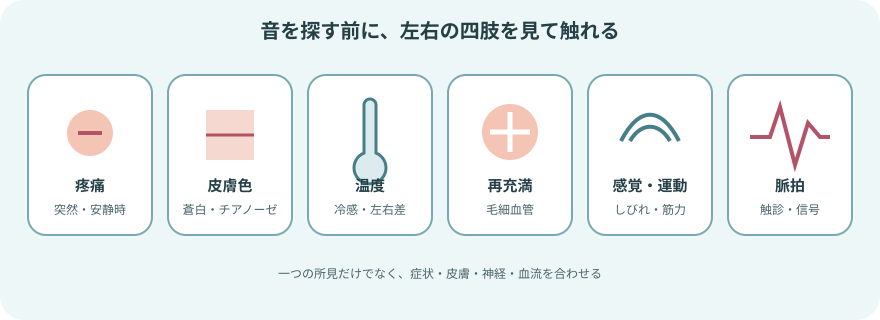
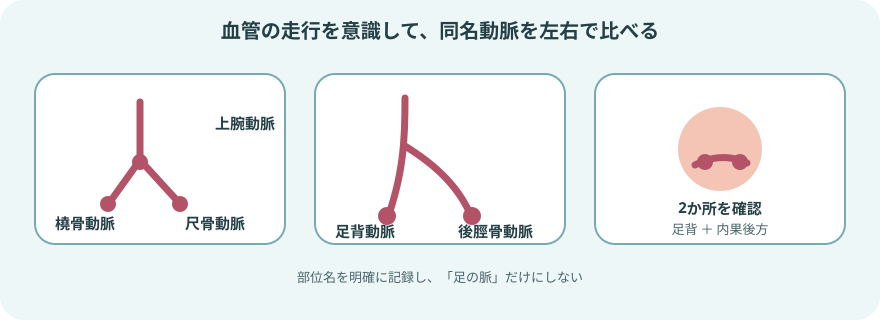
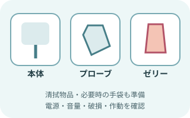
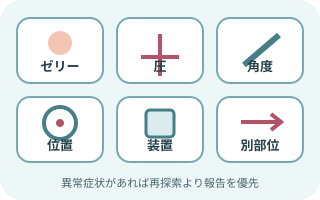
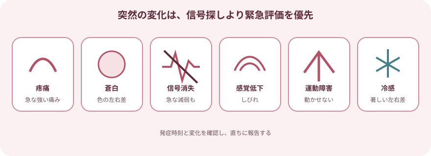

ドップラーで何を確認するか

聞こえるのは「その場所の血流信号」
- 触診で脈拍が分かりにくいときに、末梢動脈の信号を探す。
- 同じ部位を左右で比べ、処置や経過の前後で変化をみる。
- 携帯型装置の音だけでは血管の形、狭窄率、閉塞部位を確定できない。
- 信号が聞こえても、組織への血流が十分とは限らない。
まず四肢全体を観察する

- 症状：突然の痛み、安静時痛、しびれ、歩行時の痛み、創傷
- 皮膚：蒼白、チアノーゼ、発赤、光沢、潰瘍、壊死、左右差
- 循環：皮膚温、毛細血管再充満、触知できる脈拍、浮腫
- 神経・運動：感覚低下、しびれ、筋力低下、動かしにくさ
- 背景：糖尿病、腎疾患、喫煙、動脈疾患、血管手術、カテーテル治療、ギプス・圧迫物
よく確認する末梢動脈

足部は2か所を確認する
- 足背動脈：足背で、長母趾伸筋腱の外側付近を探す。
- 後脛骨動脈：内果の後方からアキレス腱側にかけて探す。
- 一方が生理的に触れにくい場合があるため、足背動脈と後脛骨動脈を確認し、反対側とも比べる。
- 測定部位は施設の記録方法に合わせ、曖昧に「足の脈」と書かない。
準備

患者と装置の両方を整える
- 患者確認、目的、観察部位を確認して説明する
- 安楽な体位を整え、対象部位を露出して左右を比べられるようにする
- 携帯型ドップラー、本体に適合するプローブ、超音波ゼリー
- ゼリーを拭き取る物品、必要時の手袋
- 電源、音量、プローブやコードの破損、装置の作動を確認する
冷えや緊張は末梢血管を収縮させる。急変でなければ室温と患者の安楽を整え、測定条件をそろえる。
血流信号を確認する手順

- 観察して触診する
皮膚色、温度、創傷、感覚、運動を確認し、血管の走行をイメージして指で脈拍を探す。
- ゼリーをのせる
予測した血管上に超音波ゼリーを置き、プローブと皮膚の間に空気が入らないようにする。
- 軽く当てて傾ける
プローブ先端をゼリーに入れ、血管の長軸に沿って皮膚に対しおよそ45～60度を目安に傾ける。細い血管を押しつぶさない。
- 最も明瞭な信号を探す
位置、角度、向きを少しずつ変える。音量を上げるだけでなく、拍動と同期した信号かを確認する。
- 同じ条件で左右を比べる
同名動脈を同じ体位・部位で確認し、信号の有無、強さ、性状、左右差をみる。
- 終了して清潔にする
ゼリーを拭き取り皮膚を整える。プローブは製造元の方法と施設基準に従って清拭・消毒する。
音・波形の捉え方

- 動脈信号：心拍に同期した拍動性の音。末梢動脈では鋭い多相性波形がみられることが多い。
- 単相性・鈍い信号：動脈病変より末梢でみられることがあるが、運動、発熱、局所の血管拡張などでも変化する。
- 静脈信号：動脈より連続的で、呼吸などに伴って変化することがある。近接する静脈を動脈と誤認しない。
- 音だけによる相分類にはばらつきがある。表示波形があれば波形も保存・記録し、判断に迷う場合は経験者や血管検査へつなぐ。
信号が得られないとき

「脈なし」と決める前に手技を見直す
- ゼリーが少ない、先端と皮膚の間に空気がある
- 押す力が強く、血管を圧迫している
- 血管の長軸から外れ、角度が合っていない
- 予測位置からずれている、浮腫や創傷で探しにくい
- 電源、音量、プローブ、コードに問題がある
- 同じ肢の別の末梢動脈と反対側を確認する
血流確認とABIは別の評価
携帯型ドップラーで音を探すだけでは、末梢動脈疾患を診断できない。病歴や診察で末梢動脈疾患が疑われる場合、上腕と足関節の収縮期血圧を測定するABIが基本的な生理検査となる。ABIはカフとドップラー装置を使い、左右の上腕動脈、足背動脈、後脛骨動脈の血圧を定められた方法で測定する。
糖尿病や慢性腎臓病では動脈が圧迫されにくく、ABIが高値・判定困難になることがある。症状や創傷があるのにABIと合わない場合は、足趾上腕血圧比、波形、皮膚灌流圧、画像検査などの追加評価が検討される。
すぐに報告する変化

突然起きた左右差を見逃さない
- 急な強い疼痛、安静時痛の増悪
- 蒼白・チアノーゼ、著明な冷感
- 触診・ドップラーで末梢動脈信号が得られない、急に弱くなった
- しびれ、感覚低下
- 筋力低下、足趾や足関節を動かせない
- 血管処置後、ギプス・包帯・圧迫物装着後の新しい循環障害
記録と申し送り
- 確認した日時、目的、体位、左右と動脈名
- 触診の可否とドップラー信号の有無
- 信号の性状、表示波形、左右差、前回からの変化
- 皮膚色、温度、毛細血管再充満、疼痛、感覚、運動、創傷
- 血管処置・圧迫・固定具との時間関係
- 報告した相手、時刻、指示、対応後の変化
出典
- 日本循環器学会ほか「2022年改訂版 末梢動脈疾患ガイドライン」
- 2024 ACC/AHA Multisociety Guideline for the Management of Lower Extremity Peripheral Artery Disease
- Queensland Health, Clinical Task Instruction: Doppler assessment
- Society for Vascular Medicine / Society for Vascular Ultrasound, Interpretation of Peripheral Arterial and Venous Doppler Waveforms
- Society for Vascular Technology of Great Britain and Ireland, ABPI Professional Performance Guidelines